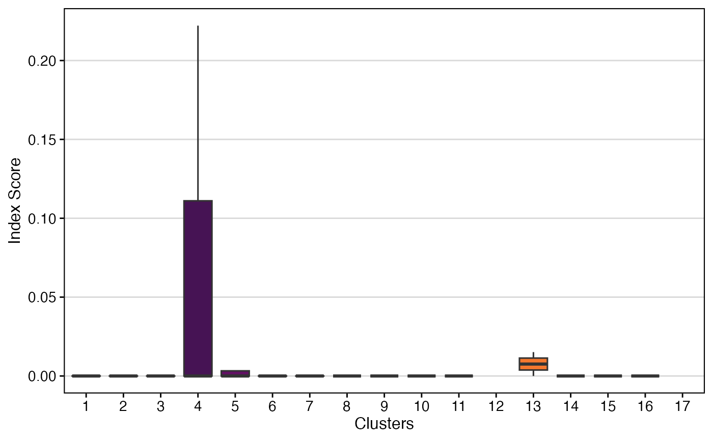
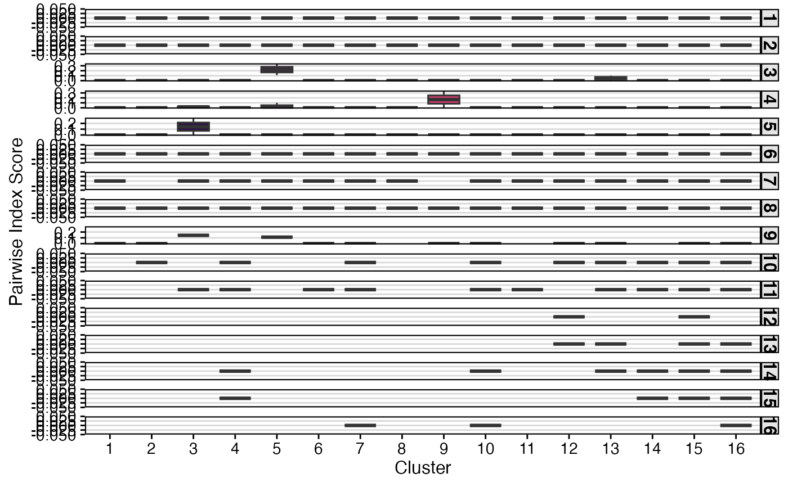

This function utilizes the STARTRAC approach to calculate T cell
diversity metrics based on the work of Zhang et al. (2018, Nature)
PMID: 30479382. It can compute
three distinct indices: clonal expansion (expa), cross-tissue migration
(migr), and state transition (tran).
StartracDiversity(
sc.data,
cloneCall = "strict",
chain = "both",
index = c("expa", "migr", "tran"),
type = NULL,
group.by = NULL,
pairwise = NULL,
exportTable = FALSE,
palette = "inferno",
...
)The single-cell object after combineExpression().
For SCE objects, the cluster variable must be in the meta data under
"cluster".
Defines the clonal sequence grouping. Accepted values
are: gene (VDJC genes), nt (CDR3 nucleotide sequence), aa (CDR3 amino
acid sequence), or strict (VDJC + nt). A custom column header can also be used.
The TCR/BCR chain to use. Use both to include both chains
(e.g., TRA/TRB). Accepted values: TRA, TRB, TRG, TRD, IGH, IGL
(for both light chains), both.
A character vector specifying which indices to calculate. Options: "expa", "migr", "tran". Default is all three.
The metadata variable that specifies tissue type for migration analysis.
A column header in the metadata or lists to group the analysis
by (e.g., "sample", "treatment"). If NULL, data will be analyzed as
by list element or active identity in the case of single-cell objects.
The metadata column to be used for pairwise comparisons.
Set to the type variable for pairwise migration or "cluster" for
pairwise transition.
If TRUE, returns a data frame or matrix of the results
instead of a plot.
Colors to use in visualization - input any hcl.pals.
Additional arguments passed to the ggplot theme
A ggplot object visualizing STARTRAC diversity metrics or data.frame if
exportTable = TRUE.
The function requires a type variable in the metadata, which specifies the
tissue origin or any other categorical variable for migration analysis.
Indices:
expa (Clonal Expansion): Measures the extent of clonal
proliferation within a T cell cluster. It is calculated as
1 - normalized Shannon entropy. A higher value indicates greater
expansion of a few clones.
migr (Cross-Tissue Migration): Quantifies the movement of
clonal T cells across different tissues (as defined by the type
parameter). It is based on the entropy of a clonotype's distribution
across tissues.
tran (State Transition): Measures the developmental transition of clonal T cells between different functional clusters. It is based on the entropy of a clonotype's distribution across clusters.
Pairwise Analysis:
The pairwise parameter enables the calculation of migration or transition
between specific pairs of tissues or clusters, respectively.
For migration (index = "migr"), set pairwise to the type column
(e.g., pairwise = "Type").
For transition (index = "tran"), set pairwise to "cluster".
# Getting the combined contigs
combined <- combineTCR(contig_list,
samples = c("P17B", "P17L", "P18B", "P18L",
"P19B","P19L", "P20B", "P20L"))
# Getting a sample of a Seurat object
scRep_example <- get(data("scRep_example"))
scRep_example <- combineExpression(combined, scRep_example)
scRep_example$Patient <- substring(scRep_example$orig.ident,1,3)
scRep_example$Type <- substring(scRep_example$orig.ident,4,4)
# Calculate a single index (expansion)
StartracDiversity(scRep_example,
type = "Type",
group.by = "Patient",
index = "expa")

# Calculate pairwise transition
StartracDiversity(scRep_example,
type = "Type",
group.by = "Patient",
index = "tran",
pairwise = "cluster")
